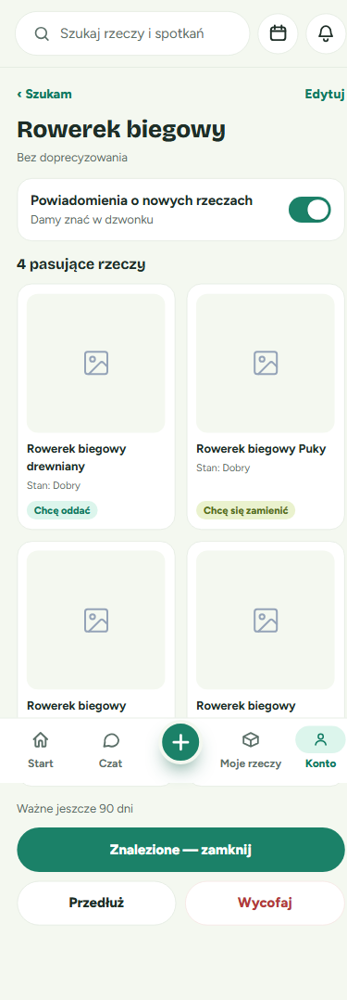
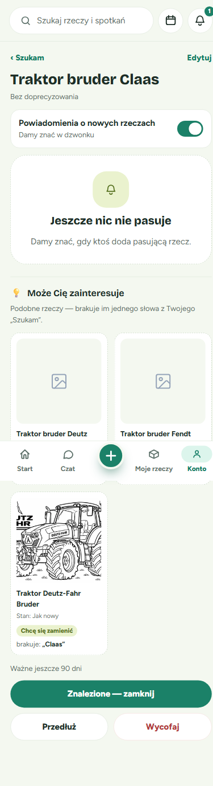
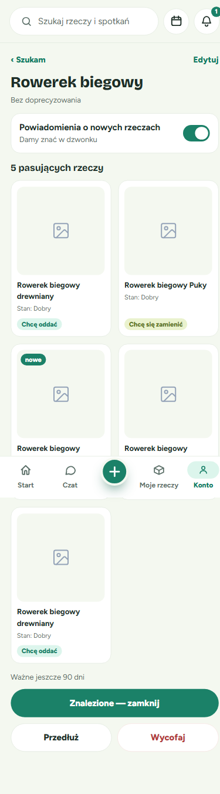
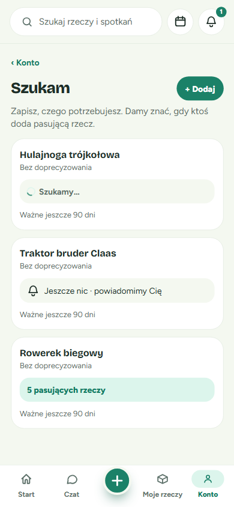
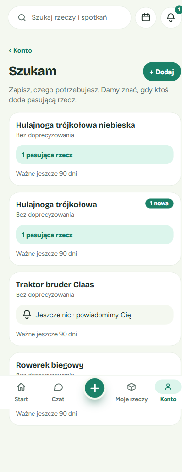
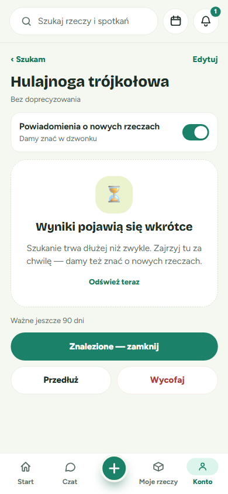
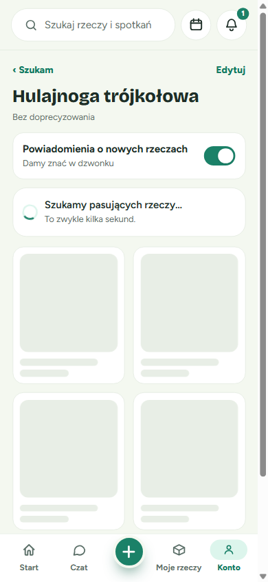
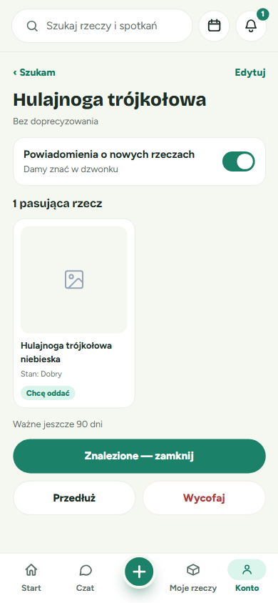
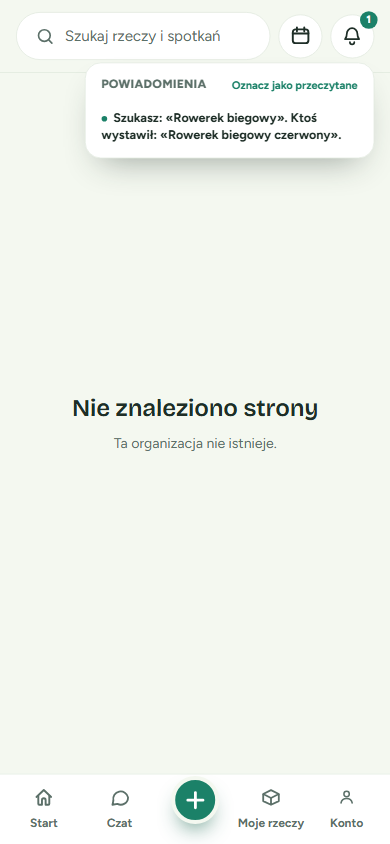
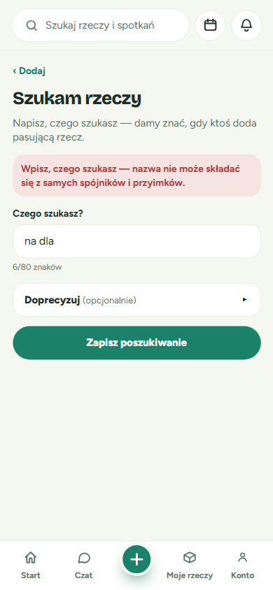

Scenarios
4.1 Pending → matches on create („Rowerek biegowy”) — ⚠️ Passed with issues
| # | Action | Actual | Status |
|---|---|---|---|
| 1 | Save „Rowerek biegowy” | Navigated to /wanted/{id} | ✅ |
| 2 | Watch for „Szukamy pasujących rzeczy…” | Never rendered: matching finished first | ⚠️ |
| 3 | Matches | At 591 ms, „4 pasujące rzeczy”, no „nowe” | ✅ |
| 4 | Bell | No notification (forward results born seen) | ✅ |

4.2 SUGGESTION tier, live („Traktor bruder Claas”) — ✅ Passed
| # | Action | Actual | Status |
|---|---|---|---|
| 1 | Create want | Empty card + „Może Cię zainteresuje” at 272 ms | ✅ |
| 2 | Section semantics | aria-labelledby → H2, 💡 aria-hidden, lead copy matches | ✅ |
| 3 | Cards | Dashed ARTICLE tiles, „brakuje: „Claas””, no „nowe” | ✅ |
| 4 | B lists „Traktor bruder Fendt” (window) | Fendt added as a suggestion; no bell | ✅ |
| 5 | List card | „Jeszcze nic · powiadomimy Cię” (MATCH-only counts) | ✅ |


4.3 Matches only, no suggestions section — ✅ Passed
| # | Action | Actual | Status |
|---|---|---|---|
| 1 | 3-word want „Hulajnoga trójkołowa niebieska” | „1 pasująca rzecz”, no section in the DOM | ✅ |
| 2 | 2-word want „Rowerek biegowy” | Count line + cards, no section | ✅ |


4.4 List page „Szukamy…” badge — ✅ Passed
| # | Action | Actual | Status |
|---|---|---|---|
| 1 | Open /wanted while matching | <p role="status"> spinner (aria-hidden) + „Szukamy…” | ✅ |
| 2 | Record GET /api/wants for 68 s | 25 requests at 2 s steps, the last at 60 s | ✅ |
| 3 | After the window | Badge kept, no slow state | ✅ |
| 4 | Revisit after the result | „1 nowa · 1 pasująca rzecz” | ✅ |


4.5 Pending → slow → „Odśwież teraz” → result — ✅ Passed
| # | Action | Actual | Status |
|---|---|---|---|
| 1 | Matcher stopped; create „Hulajnoga trójkołowa” | Status row (role=status, polite) + 4 aria-hidden skeleton tiles | ✅ |
| 2 | Record GET /api/wants/{id} | 31 requests at 2 s steps, 0–60 s | ✅ |
| 3 | Window end | Slow card at 60 s, polling stops, no skeleton | ✅ |
| 4 | Click „Odśwież teraz” | Back to pending; requests at 0 / 2.1 / 4.1 / 6.1 s | ✅ |
| 5 | docker compose start matcher | Match rendered 1.3 s later | ✅ |




4.6 Window bell for a new listing — ✅ Passed
| # | Action | Actual | Status |
|---|---|---|---|
| 1 | B lists „Rowerek biegowy czerwony” + „Traktor bruder Fendt” | WANT_MATCH_FOUND 60 s later (matches=2 suggestions=1 outbox_rows=1) | ✅ |
| 2 | Open the bell | „Szukasz: «Rowerek biegowy». Ktoś wystawił: «Rowerek biegowy czerwony».” | ✅ |
| 3 | Suggestion bell? | None for Fendt | ✅ |
| 4 | Want detail | „nowe” on the new pair | ✅ |

4.7 Stop-words-only name — ✅ Passed
| # | Action | Actual | Status |
|---|---|---|---|
| 1 | Submit „na dla” | 400 „Wpisz, czego szukasz — nazwa nie może składać się z samych spójników i przyimków.” | ✅ |
| 2 | Form error | Same text in role="alert", value kept | ✅ |

Discrepancies
minorWindow-born pair after a matcher restart rings a bell for an item already shown
| Spec requirement | Forward runs born seen with no bell; window runs unseen and belled; FR-FE-05 / L4 |
|---|---|
| Expected | A bell only for items the seeker has not already seen |
| Actual | A listing from 1 s before the stop was caught by the first window run after the restart. The open page showed it, then a WANT_MATCH_FOUND bell arrived 30 s later, and the list showed „1 nowa”. |
| Evidence | screenshots/14-after-matcher-restart-result.png, screenshots/16-wanted-list-final.png |
| Root cause hypothesis | The catch-up window runs before the request claim; ON CONFLICT DO NOTHING gives the pair to the first inserter (by design) |
| User impact | A redundant bell / „nowe”, only around matcher downtime or races |
| Recommended fix | Accept, or claim requests before the first window after start-up (product decision) |
| Workaround | None needed |
cosmeticConsole 404 from /api/organizations/mine on every page
| Spec requirement | Not in this spec (console hygiene) |
|---|---|
| Expected | No console errors |
| Actual | 404 logged for a user without an organization (pre-existing) |
| Evidence | Console log (§6 of the md) |
| Root cause hypothesis | A shell query treats „no organization” as 404 |
| User impact | None visible |
| Recommended fix | Out of scope; optional later cleanup |
| Workaround | Ignore |
Console & network errors
| Source | Message | Frequency | Severity |
|---|---|---|---|
/api/organizations/mine | 404 | Every page load | cosmetic |
POST /api/wants | 400 | Once (expected, 4.7) | — |
/api/public/organizations/notifications | 404 | Once (tester's wrong URL) | — |
Backend: no tracebacks or 500s. Matcher: clean stop/start, „database contract ready (attempt 1)” → „listening”.
Spec alignment
Fully implemented: FR-FE-01, FR-FE-02, FR-FE-03, FR-FE-04, FR-FE-05, FR-FE-06; AC-02, AC-03, AC-04, AC-08
Partially / not implemented: none. (FR-FE-07 is not browser-observable.) Extra behaviour: none observed.
Exit criteria
| Criterion | Status | Evidence |
|---|---|---|
| AC-02 fast matching; stop-words 400 | ✅ | 4.1, 4.2, 4.7 |
| AC-03 forward born seen; window MATCH bell; no suggestion bell | ✅ | 4.1, 4.6 |
AC-04 MATCH-only counts; missing_words | ✅ | 4.2 |
| AC-07 (runtime) resumes after a restart | ✅ | 4.5 |
| AC-08 five screens + two components; slow at ~60 s; resume | ✅ | 4.3–4.5, visual fidelity |
Recommendations
- Must fix before merge: none
- Should fix soon: decide on the minor restart bell edge case
- Nice-to-have: the
/api/organizations/mine404 noise (outside this task)
Conclusion: ⚠️ GO WITH CAVEATS. Merge (subject to the spec's release gate) and record a product decision on the restart edge case.